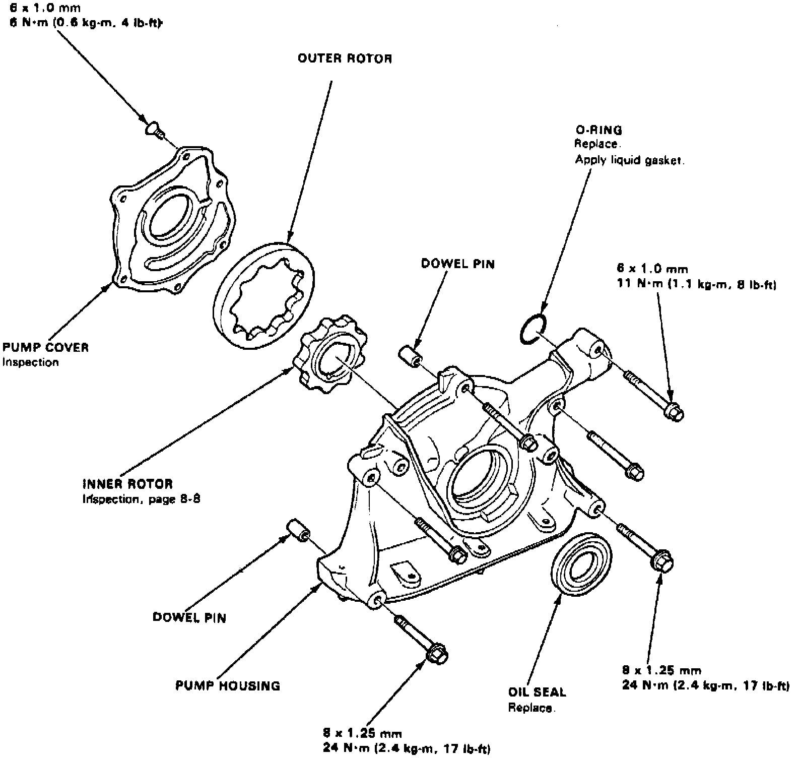
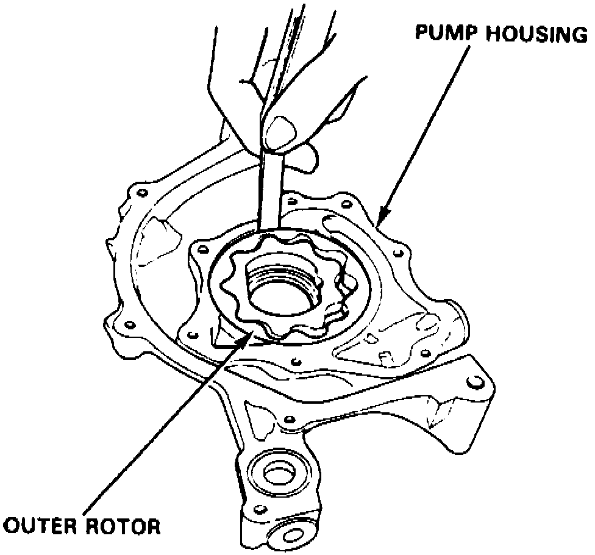
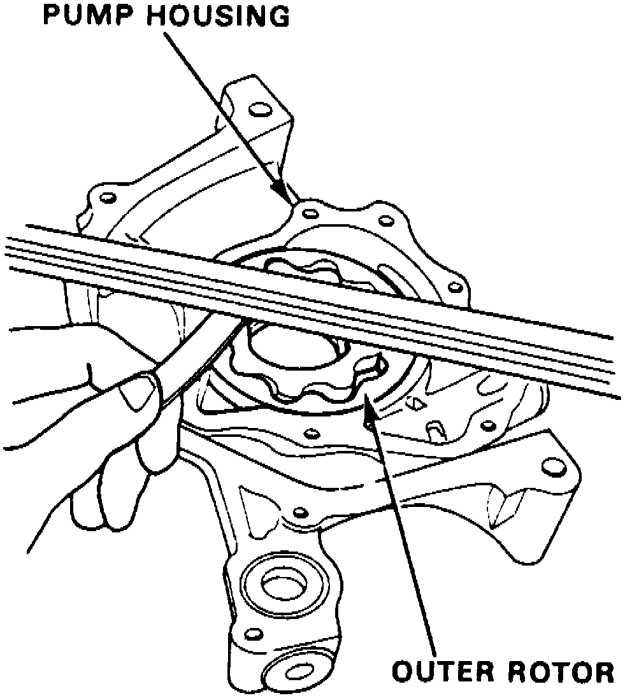
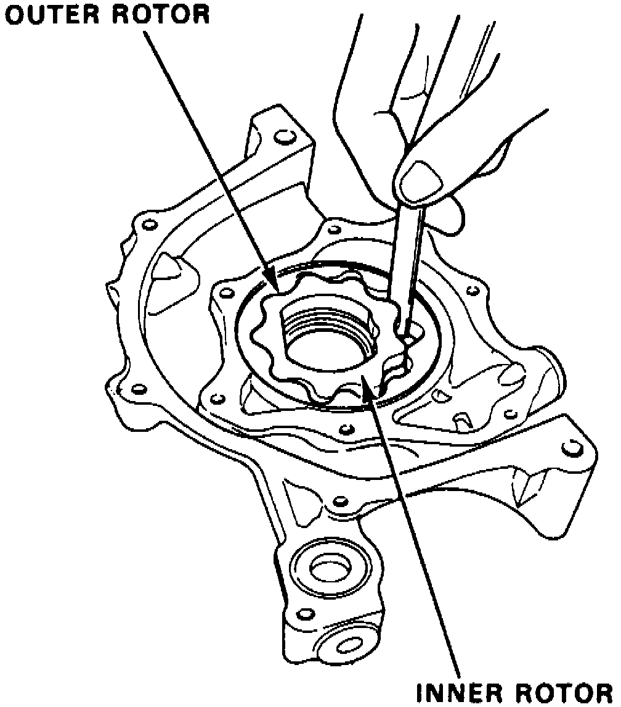

Oil Pump: Testing and Inspection
Fig. 91 Exploded View Of Oil Pump Assembly:

1. Remove pump housing attaching screws, then separate housing and cover, Fig. 91.
Fig. 92 Oil Pump Outer Rotor Radial Clearance Measurement:

2. Measure outer pump rotor radial clearance, Fig. 92. Clearance must not exceed 0.008 inches.
Fig. 93 Oil Pump Outer Rotor Axial Clearance Measurement:

3. Measure outer pump rotor axial clearance, Fig. 93. Clearance must not exceed 0.006 inches.
Fig. 94 Oil Pump Housing To Rotor Clearance Measurement:

4. Measure radial clearance between housing and outer rotor, Fig. 94. Clearance must not exceed 0.008 inches.
5. Inspect both rotors and pump housing for wear or damage and replace as necessary.
6. Remove oil seal from pump, then drive in new seal using a suitable tool.
7. Assemble oil pump in reverse order of disassembly.
8. Apply suitable locking compound to pump housing screws prior to installation.